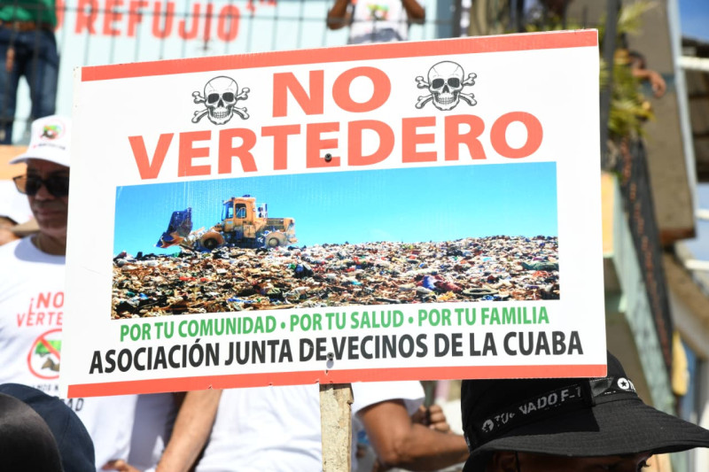

Sigue el pulso de Republica Dominicana. Te ofrecemos las noticias nacionales más relevantes al minuto, cubriendo política, economía y sucesos que impactan tu vida diaria.
Medio Ambiente sobre relleno sanitario de La Cuaba: Cada paso se enmarca en la normativa vigente.
El Ministerio de Medio Ambiente y Recursos Naturales informó que todas las acciones relacionadas con el relleno sanitario de La Cuaba se realizan conforme a la normativa vigente. La institución destacó que se han implementado medidas para garantizar la gestión adecuada de los residuos sólidos y minimizar el impacto ambiental en la zona.
Además, se están llevando a cabo monitoreos constantes para evaluar la calidad del aire y del agua en las áreas circundantes, asegurando que se cumplan los estándares ambientales establecidos por la ley. El Ministerio reafirmó su compromiso con la protección del medio ambiente y la salud pública.

Melanie Cuevas Santo Domingo, RD.
melanie.cuevas@listindiario.com
"Luego de una semana solicitando la postura del Ministerio de Medio Ambiente y Recursos Naturales sobre los reclamos de comunitarios del Distrito municipal de la Cuaba, quienes rechazan la instalación de un relleno sanitario en el paraje El Aguacate, esta entidad indicó que cada paso realizado se enmarca en la normativa vigente.
A través de una comunicación indicaron que la solicitud vinculada a este proyecto ha sido atendida siguiendo procedimientos obligatorios, que garanticen una evaluación rigurosa, transparente y ajustada a la normativa vigente”.
FNP dice acuerdo entre República Dominicana y Estados Unidos es "oportuno, correcto y necesario"
"Saludamos el cambio de política de EEUU. Nuestra organización celebra con esperanza que la administración del Presidente Donald Trump esté cambiando sustancialmente el enfoque de lucha de los Estados Unidos, ya que estaba harto demostrado que las políticas débiles, ambiguas, mediatizadas y/o contemporizadoras”, dijo Pelegrín Castillo.
Nayrobi Cruz Santo Domingo, RD.
cruzjnayrobi@gmail.com
El partido Fuerza Nacional Progresista (FNP), calificó como “oportuno, correcto y necesario” el acuerdo anunciado el miércoles por el presidente Luis Abinader y el secretario de Guerra de Estados Unidos, Pete Hegseth, que busca fortalecer la lucha contra el crimen organizado transnacional en el Caribe.
En una rueda de prensa, realizada este viernes, Pelegrín Castillo, presidente de esa organización política, indicó que el pacto cuenta con “fundamentos constitucionales”.
“Destacamos que los Artículos. 128 y 262 de la Constitución de la República, consignan claros mandatos de enfrentar el Crimen Organizado Transnacional, cuya expansión en el Gran Caribe viene constituyendo hace tiempo un peligroso fenómeno capaz de destruir instituciones y estados, y de lesionar la seguridad de las comunidades y su gente”, dijo.
Muertes por accidentes de tránsito siguen en aumento, RD registra promedio de 2,000 decesos anuales
Las muertes por accidentes de tránsito en la República Dominicana continúan en aumento, registrando un promedio de 2,000 decesos anuales. Según datos recientes del Instituto Nacional de Tránsito y Transporte Terrestre (INTRANT), el país ha experimentado un incremento significativo en el número de accidentes fatales en los últimos años.
Las autoridades atribuyen este aumento a diversos factores, incluyendo el incumplimiento de las normas de tránsito, el exceso de velocidad, el consumo de alcohol al volante y la falta de educación vial. En respuesta a esta preocupante tendencia, el gobierno ha implementado campañas de concienciación y reforzado la vigilancia en las carreteras para mejorar la seguridad vial y reducir el número de accidentes.
Yudelka Domínguez Santo Domingo, RD.
yudelkado@gmail.com
“En el período 2020-2024, el país registró un promedio anual de 1,728 accidentes de tránsito con fallecidos en el lugar del hecho”, explica la Oficina Nacional de Estadística (ONE) en una infografía de seguridad vial.
La suma total de las muertes agrupadas en la ONE alcanza aproximadamente 8,639 personas, de acuerdo al anuario de muertes accidentales y violentas.
A diferencia de los datos de la ONE, la Junta Central Electoral (JCE) establece que desde el 2020 al 2024 en el país se ha registrado la muerte de 10,139 personas por accidentes de tránsito.
De acuerdo a la JCE, en el 2024 se produjeron 2,123 muertes por accidentes de tránsito, mientras que en el 2023 fueron 2,091; en el 2022, 2,052; en el 2021, 1,964 y en el 2020, 1,909."